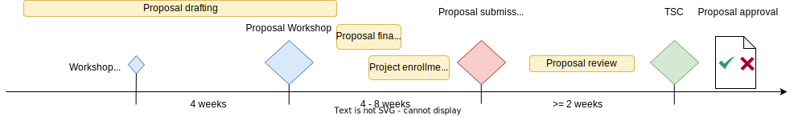
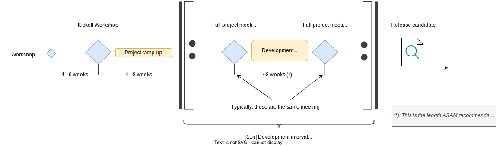
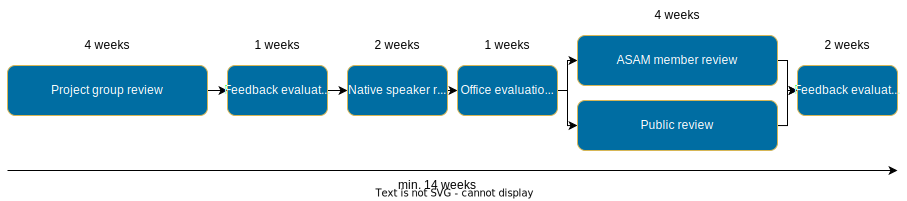
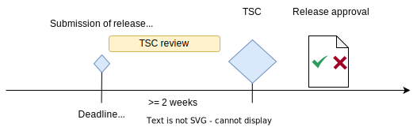

Project phases

Introduction
Besides different types of projects, there are five main project phases that ASAM defines. Not all projects must necessarily pass through all these phases. See the phase descriptions below for more details.
image::compendium:Concepts/project_lifecycle.drawio.svg[alt=The ASAM Project Phases, title=The ASAM project phases.
Descriptions
Purpose |
To define the technical scope of a project at ASAM. |
|---|---|
Required for |
Every project type. |
Timeline |
The typical Proposal Phase timeline consists of

|
All projects at ASAM are required to begin with the proposal phase. The focus of this period is to refine the technical content of a potential project with interested parties. The proposal workshop is mandatory for all projects. It is used to present more insight into the scope and gather further feedback and parties.
The output of the proposal phase is a set of proposal documents, detailing the project’s targets, participants, the budget, timeline, and other project-related information, such as the type of the project.
The proposal documents are the basis for the TSC to decide whether to approve a project.
Should a project be approved, it proceeds on to the Development phase.
| Download the project proposal templates here. |
Purpose |
To develop the project’s deliverables. |
|---|---|
Required for |
Every project type. |
Timeline |
The length of the Development Phase varies from project to project.

|
This is the main phase of each project.
If you want to learn more about how to get ready for your project, check out the Guided tour.
During this phase, the project-type specific deliverables are developed by the project participants.
In the beginning, the project team organizes a workshop to specify their modus operandi and set up all technical aspects of the project.
In particular, the Project Lead who is the main responsible for the project is elected.
Depending on the size of the project, other roles such as subgroup Leads are also elected.
Additionally, the group may also employ one or more Service Providers as outside help if the required budget was included in the Proposal document.
This is followed by specifying, writing, and reviewing content internally until the document or documents are ready for a ASAM-internal or public review in the Review Phase.
| The project group shall review their changes regularly during development. The Review phase is a dedicated "final" review phase before publication. |
During development, the project team has regular group meetings.
ASAM recommends a 2 month interval for these larger meetings.
In between, the group (and its optional subgroups) works on the parts of the project they prioritized for this interval.
During development, the project group will meet in multiple different types of meetings not depicted here. For example, a project with subgroups will have individual subgroup meetings for each of them within each development interval. For more on the types of meetings during a project’s development, see Project meetings in the Guided tour.
Purpose |
To review the developed deliverables. |
|---|---|
Required for |
|
Timeline |
The typical Review Phase timeline looks like this:

Figure 1. The Review phase timeline
|
Before a developed standard is officially released, the deliverables have to be reviewed.
A project’s proposal shall detail whether an ASAM member or a public review is planned.
Any problems that are identified during any of these reviews are then analyzed and categorized.
Important fixes have to be made before the deliverables are released, whilst improvements beyond the initial scope or minute details may be put off for future iterations.
Once the document has been successfully reviewed and no critical issues are open anymore, the project continues on to the Release Phase.
After each review period, all feedback shall be reviewed and the group shall make a decision on how to proceed with it.
The decision includes as a minimum the status "accepted" or "rejected"
The decision shall be documented.
The group may start reviewing the feedback before the end of the respective review period.
However, it may not extend into the next period.
Accepted feedback shall be implemented. The project group has full authority how to implement the reviewers' feedback into the standard. They can implement changes as proposed by the reviewer, or decide for a different implementation.
Reviewers may not submit new use-cases, features, or requirements as part of their review feedback.
If this is the case, then the feedback shall be rejected and transferred to the ASAM CR-system with status "new".
If any review points lead to a need to implement major changes, the review process begins anew.
Purpose |
To release the developed deliverables. |
|---|---|
Required for |
Every project type. |
Timeline |
The typical Release Phase timeline looks like this:

Figure 2. The Release phase timeline
|
After the deliverables have been developed (and, in case of a major or minor standard development project, successfully reviewed), the project enters the Release Phase. The project group prepares a release candidate and agrees per formal voting to submit the candidate to the TSC for release decision. The release candidate has to be accepted by absolute two-thirds majority for it to pass.
The Project Leader submits the following deliverables to ASAM:
-
the standard with all supplemental documents, files and examples that constitute the deliverables to members
-
sources required to generate the deliverables, including written instructions how to generate them
-
a (new) release presentation
(Sources are those digital work products, which can be modified or edited with standard tools such as text editors, image processors or modeling tools, and which are the input for generators that produce the final deliverables.)
| The release candidate has to be submitted by the deadline date published on the ASAM website. |
The project has now concluded.